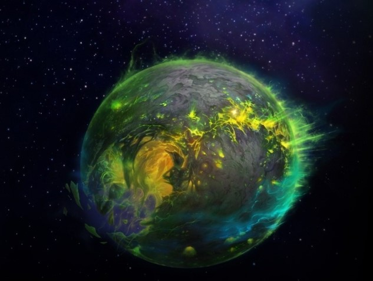

Legion
Гул’дан из альтернативной вселенной прибывает на Азерот. Его цель – организовать вторжение Пылающего Легиона. Найдя гробницу Саргераса, чернокнижник превращает её во врата в Круговерть Пустоты. Полчища демонов обрушились на Азерот. Также Гул’дан находит Иллидана, который был заточен во время событий Burning Crusade.
9 лет назад, когда герои Азерота штурмом брали Чёрный храм, они видели лишь одну сторону конфликта, но была и другая. Иллидана считали предателем, отступником, за то, что он принял силу от демонов. Но всё это было хитрым планом ночного эльфа. Получив силы от Пылающего Легиона, Иллидан намеревался раз и навсегда покончить с демонами. Для этого он создал элитный отряд воинов – иллидари. Во время вторжения в Чёрных храм, Иллидан отправляет иллидари на поиски артефакта, который позволяет перемещаться между мирами, захваченными Пылающим Легионом. С помощью этого артефакта Отступник планировал освободить миры от Легиона. Чтобы выиграть время для своих воинов, Иллидан вступает в схватку с героями Азерота и проигрывает. Когда наконец иллидари возвращаются с артефактом в Чёрный храм, они видят, что Иллидан пал. Иллидари вместе с Иллиданом были заточены в Казематы Стражей.
Несколько лет Кадгар выслеживал Гул’дана, но так и не успел его остановить. Началось вторжение легиона, и верховному магу ничего не оставалось делать, кроме как попросить помощи у Альянса и Орды.
Однако, силы оказались неравными. Серебряный авангард – орден, защищающий Азерот от зла был полностью разгромлен. Тирион Фордринг, сильнейший паладин, который помог победить самого Короля-лича пал в бою. Символ света и надежды всего мира умер на глазах у объединенной армии Орды и Альянса. Герои Азерота несмотря на всё продолжили преследовать чернокнижника. Они догнали Гул’дана рядом с порталом и дали бой. Но сила Легиона была неудержима. Орда и Альянса заняли стратегические позиции чтобы поддерживать друг друга, но все обернулось крахом. Орду теснили, Вол’джина – вождя Орды – смертельно ранили. Было принято решение об отступлении. В то же время, оставшийся без прикрытия Альянс счёл это предательством. (Из-за занятых позиций, Альянс не мог видеть какая плачевная ситуация была у Орды. Орда была вынуждена отступать, но Альянс этого знать не мог) Всё что оставалось Альянсу – бежать. Битва была проиграна. Но Гул’дан не хотел отпускать своих врагов просто так. Вариану Ринну – королю Альянса – пришлось пожертвовать собой ради спасения своих воинов. Обе фракции понесли серьезнейшие потери, а войска Легоина продолжали своё наступление.
После победы над объединенными силами Орды и Альянса, Гул’дан отправился в Казематы стражей. Там находился Иллидан, который был необходим чернокнижнику. Гул’дан надеялся получить силу Иллидана который тот много лет назад унаследовал от демонов. Стражам Казематов ничего не оставалось, кроме как освободить иллидари вместе с их лидером чтобы они помогли отбить атаку Легиона.
Герои Азерота, объединившиеся с Иллиданом и его воинами сразились с Гул’даном. Чернокнижник пал в бою, но это было только начало. Гул’дан успел связаться с офицером Саргераса – Кил’джеденом. Тот в свою очередь пустил все силы Легиона чтобы окончательно избавиться от героев и раз и на всегда закончить битву за Азерот. Но в этот раз герои оказались сильнее и победили могущественного демона.
Объединенные силы Альянса и Орды не хотели давать даже шанса Легоину на контратаку. Следующим шагом геров стал удар в самое сердце Пылающего Легиона. Где-то в Круговерти Пустоты, находится Аргус – некогда процветающая планета, а ныне – родина демонов. Собрав воедино артефакт, части которого были разбросаны по всей планете, героям удалось подобраться к Пылающему Трону Саргераса – Анторусу.
Но у Павшего Титана в подчинении были не только демоны. Саргерас поработил души творцов, чтобы с помощью их сил создать новую и ещё более могущественную армию. Когда Саргерас это сделает, никакая сила во вселенной не сможет его остановить. Пробравшись к самому сердцу Анторуса, героям удалось избавить сердца Титнов-творцов от тлетворного влияния скверны. В конце их ждал Аргус – Титан-душа мира, служившая источником энергии для всего Легиона.
Чтобы окончательно покончить со всем, Титанам нужно было очистить душу их вашего собрата. К сожалению, скверна слишком глубоко проникла в Аргуса, и он стал воплощением Титана Смерти. Это был последний враг между героями Азерота и самим Саргерасом.

На самом деле, всё это время главной целью Саргераса была душа Азерот, такая же Титан-душа как и Аргус. Саргерас считал силу Азерот настолько могущественной, что на протяжении тысячелетий пытался её заполучить и теперь он был буквально в шаге от воплощения своего плана.
Но герои Азерота чудом одолели Аргуса. С помощью Титанов-творцов они сумели заточить Саргераса в тюрьму навечно, а в качестве надсмотрщика-стража выступил Иллидан. Пылающий Легион наконец то был окончательно повержен.
В последний момент перед заключением, Саргерас, боясь что Повелители Бездны когда-нибудь могут добраться до могущественной души Азерот, пронзил планету своим оскверненным клинком.